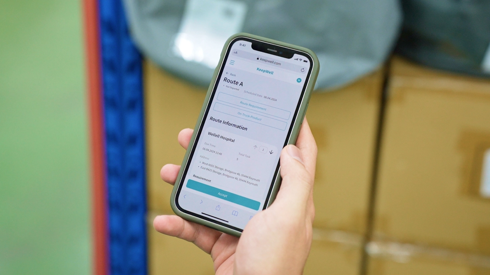
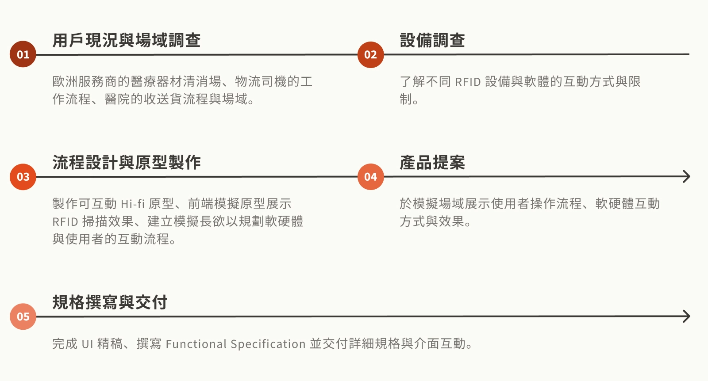
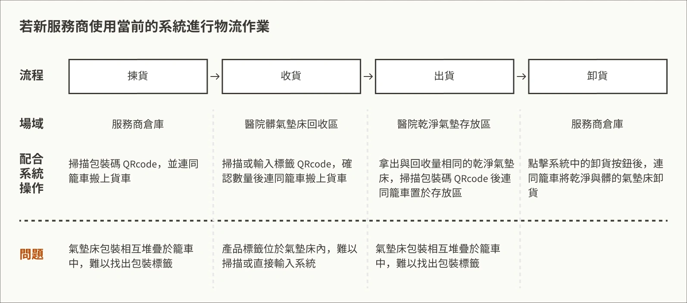
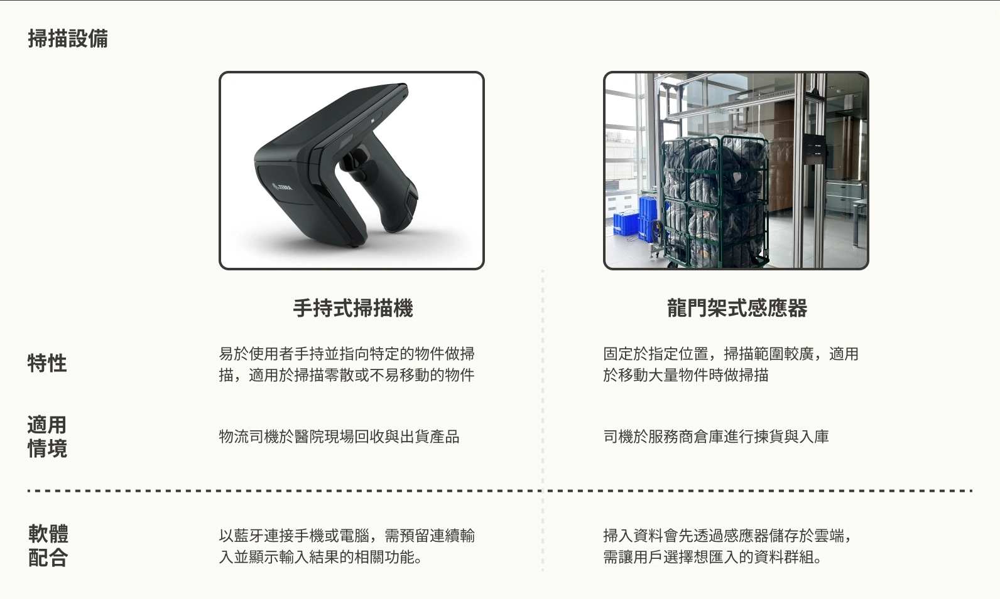
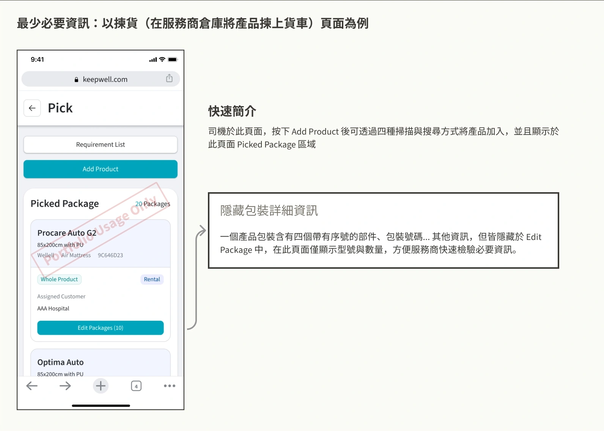
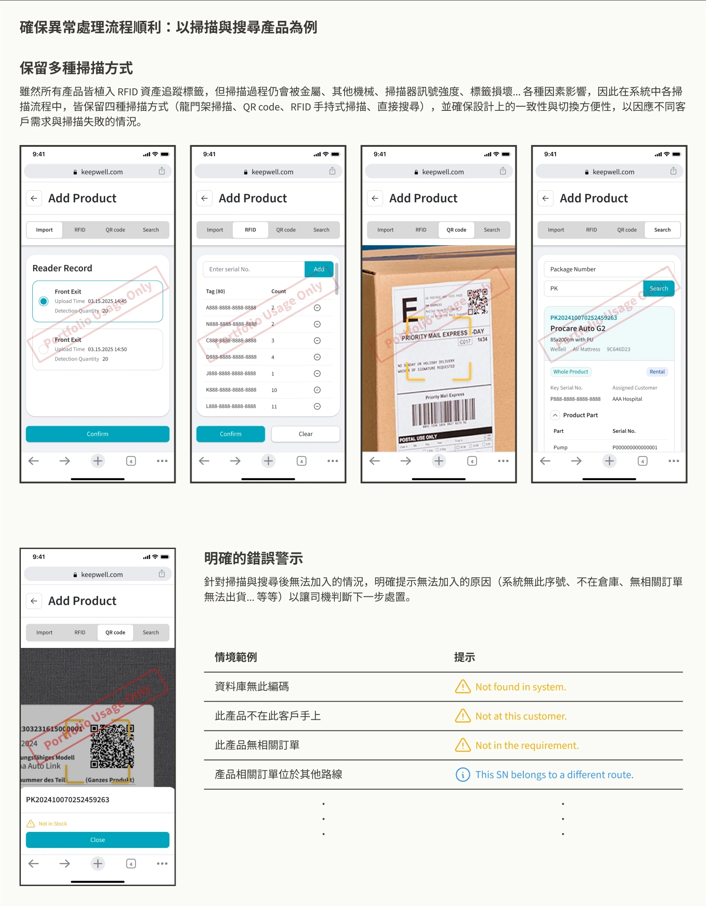

商業目標：增加客戶數量以增加收入
因應歐洲市場工業 4.0 的轉型趨勢，新增 RFID 掃描功能提升客戶滿意度與市場競爭力。
本專案已簽署 NDA，無法於公開平台展示專案細節。
Executive Summary
QRcode 必須看到標籤才能掃，但氣墊床在籠車裡堆疊，司機難以甚至無法逐一翻找，頻繁掃描也拖慢收送貨作業。
保留 QRcode，另加 RFID 作為選項；現場只呈現「型號與數量」；掃描異常時提供替代解法，讓作業不中斷。
客戶已簽約購買並導入 RFID 服務。

KeepWell 是一個為 PRC 醫療器材所開發的清消與租賃流程管理 SaaS 系統，搭配專為醫療器材所設計的 QRcode 資產追蹤標籤，提供歐洲的醫療器材服務商進行場內器材庫存、清消、訂單、物流、客戶… 等完整服務流程的數位化管理。此軟體當前主要服務出租醫療氣墊床的服務商。
接觸服務商後發現，其物流的作業流程難以配合 QRcode 的掃描方式。因為 Qrcode 資產追蹤標籤需要使用者找到並看到標籤本身才能掃描，而該服務商經常以籠車為單位在收送氣墊床，很難在運送過程中翻找出資產追蹤碼（一個籠車可放約 20 組氣墊床，一張氣墊床約 15 公斤重）。

頻繁掃描會降低收送貨作業效率。
護理人員回收後的氣墊床通常不會整齊堆放，而是分散在回收區。司機多半以目視確認後直接搬上籠車，不會逐一清點每一張床墊。
產品堆疊後難以找到資產追蹤標籤。
部分服務商會將氣墊床堆疊在金屬籠車中，QRcode 常被遮住或朝內，導致司機無法逐一找到並掃描每個標籤。


因應歐洲市場工業 4.0 的轉型趨勢，新增 RFID 掃描功能提升客戶滿意度與市場競爭力。
提供使用者從揀貨、出貨、收貨、卸貨入庫完整的 RFID 資產追蹤功能。

讓用戶於手機端能快速進行產品掃描移轉，並針對掃描過程的例外情況提供適當的引導。
經過於客戶現場的場域調查，我們發現物流相關流程中，需選配二種 RFID 掃描設備並使軟體兼容不同的掃描方式，以滿足服務商在不同場域的使用需求，提升作業效率。

根據調查，服務商在物流階段資產追蹤最在乎的時間點為「氣墊床送達醫院」和「氣墊床被司機回收」（作為向醫院收取租賃費的依據），且「回收數量」為物流司機現場作業時最在意的資訊（確保補給醫院相同數量的乾淨氣墊床），產品序號、是否損壞、確切數量... 等皆等到回廠卸貨後，才交給產品清消人員做複查。
因此，我採用以下兩個設計原則將 RFID 功能整合進物流模組：


我們仿照服務商與醫院環境，依用戶旅程圖建構模擬場域，並製作可互動原型以測試設計概念。


我們向客戶展示不同 RFID 設備的掃描方式與結果，利用模擬場域模擬作業人員的掃描方式，並搭配提案簡報說明軟體開發路徑與導入相關準備事宜。並成功於 2025 年下半年確認簽約購買相關服務，目前已導入。


在這次調查中發現，服務商和醫院為了提高作業效率，時常私下談妥並省略一部分我們原先認為重要的作業環節，例如出租商品序號複查、準確的回收時間、現場確認出租物無損壞... 等等。導致我們在初始版本中，根據易用性原則來避免用戶錯誤操作和確保數據精確的設計，對使用者來說反而是多餘的資訊與功能。
在系統過往的設計中，不同模組之間的資料是密不可分的，移除任一個模組都會造成資料無法運作。本次專案中，為符合客戶實體場域的需求，我們花了許多時間針對模組的拆解作許多調整，甚至花了不少心力改動其他模組的架構來允許模組拆分。
未來，在已知目標使用者群本來就有多種使用流程的情況下，在設計各模組之間的串接時應更注意模組化的可能，避免每次遇到作業流程不同的客戶就需要花費大量時間調整。
設計系統架構規劃與整理